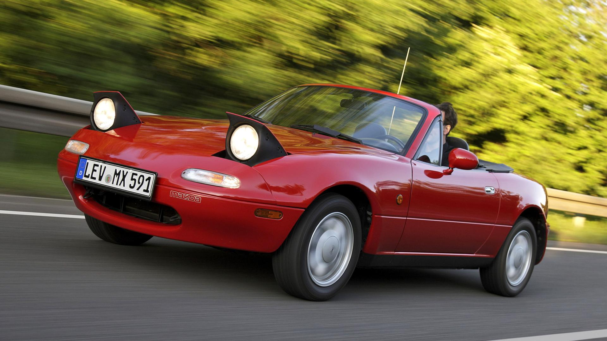
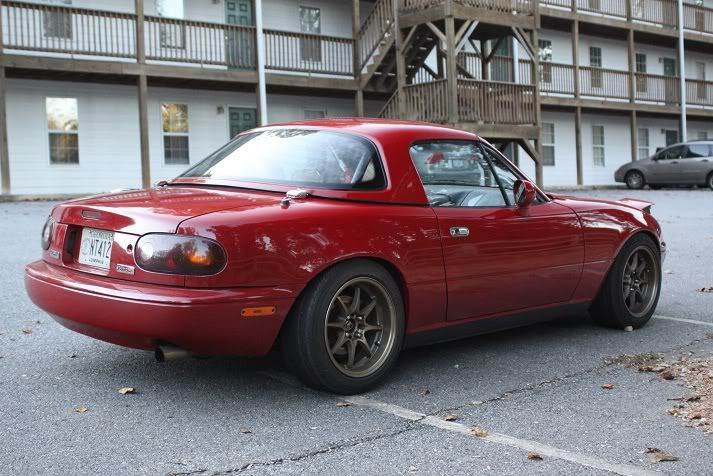
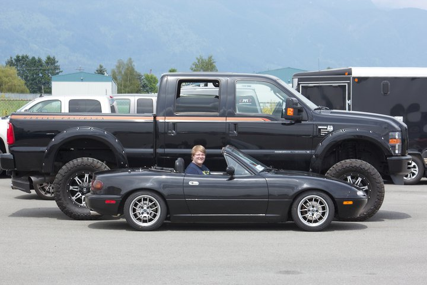
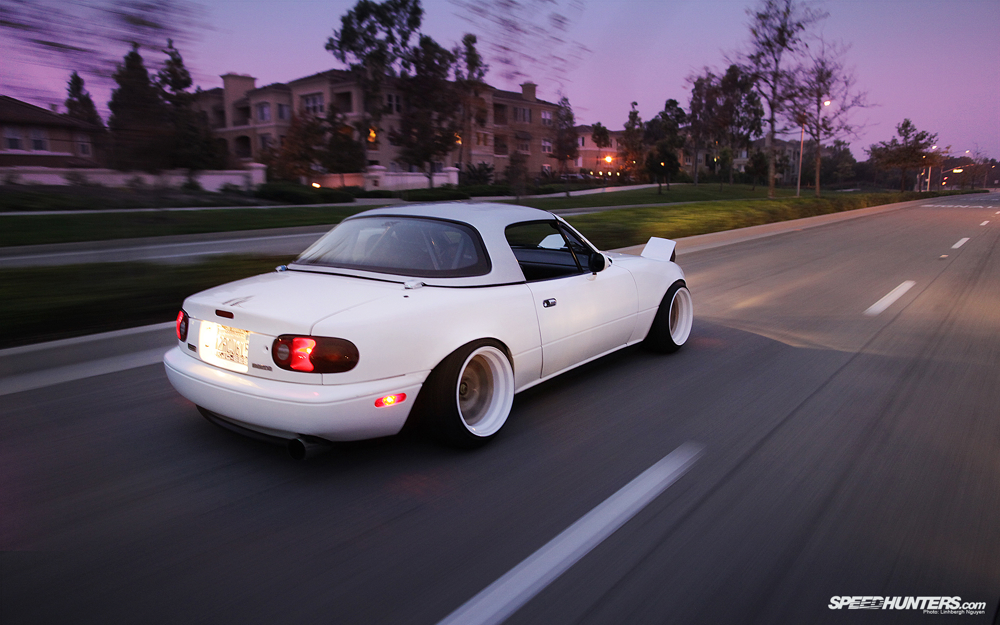

NA (1989-1997)
El MX-5 NA (También conocido como MK1) se presentó en el Salón de Chicago de 1989, el 9 de febreroMotorizaciones:
NA 1.6L 115cv (NA/1989-1993)
NA2 1.6L 90cv y 1.8L 133cv (NA2/1993-1997)
De redondeada parrilla, sencillas curvas y los característicos faros escamotables, llegaba a las calles en 1989 el primer Miata, movido inicialmente por una mecánica de 4 cilindros, gasolina, atmosférico y de 1.6 litros con una potencia de 115 caballos que quedaban entregados al tren posterior, contando con una transmisión manual de 5 relaciones y un par de 135 Nm. Además de la transmisión manual también estuvo disponible con una caja de cambios automática de 4 velocidades. El motor queda bastante retrasado respecto al tren delantero, muy próximo al habitáculo.
1 / 3

2 / 3

3 / 3


Al igual que su silueta exterior, su habitáculo recurría a una sencilla configuración, con un salpicadero y una consola central sin floritura alguna. Podía llegar a contar, en función de la versión, con aire acondicionado, elevalunas eléctricos y equipo de sonido con altavoces en los propios asientos. También estaba disponible un volante y un pomo del cambio firmados por Nardi y acabados en madera, estando también disponible un tirador del freno de mano con el mismo acabado. Junto a las llantas originales, de 14 pulgadas, había alternativas con el sello de BBS o Enkei de 15 pulgadas y se ofrecía un techo duro opcional que, inicialmente, sólo estaba disponible en rojo.
Sus dimensiones eran bastante contenidas, de hecho, la búsqueda de un tamaño comedido es uno de los pilares de la filosofía de diseño bajo la que se creó, el concepto Jinba-ittai, haciendo alusión al nexo, a la perfecta unión entre el jinete y el caballo.
En cifras cuenta con una longitud de 3.950 mm, una anchura de 1.675 mm y una altura de 1.225 mm, siendo su distancia entre ejes de 2.265 mm. Su peso era otra de las claves fundamentales en su diseño, quedándose esta primera generación por debajo de la tonelada con 970 Kg y buscando además en su desarrollo un perfecto reparto de pesos del 50% entre ejes.
ALERTA A USUARIOS CON CASCOS -- SONIDO ALTO